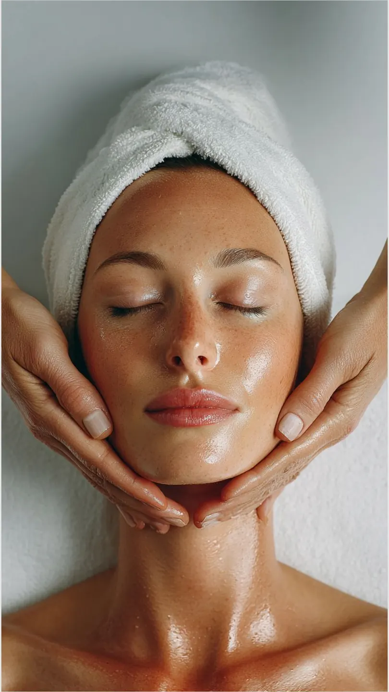

Bőrfiatalítás
BőrfiatalításTermészetesen üdébb
Mesotica kezelések és személyre szabott hatóanyagok a bőröd változó igényeihez, arcra, nyakra és dekoltázsra.
Erről szeretnék egyeztetniSzemélyes figyelem. Szakértő gondoskodás.
Egy kis idő, ami csak rólad szól. Bőröd igényeire hangolt kezelésekkel és nyugodt, privát környezettel várlak Budapesten.
Bőrfiatalítás, mélyhidratálás vagy célzott segítség a problémás bőrnek. Az első találkozáskor együtt találjuk meg, mire van szükséged.
BőrfiatalításMesotica kezelések és személyre szabott hatóanyagok a bőröd változó igényeihez, arcra, nyakra és dekoltázsra.
Erről szeretnék egyeztetni Hidratálás
HidratálásBelico Hydro energy mélyhidratáló kezelés a bőr komfortjáért. A megfelelő ápolást a bőröd állapotához igazítom.
Erről szeretnék egyeztetniAnti-akné kezelések és érzékeny bőrre szabott Belico ápolás. A közös kiindulópont az alapos bőrállapot-felmérés.
Erről szeretnék egyeztetniNálam minden kezelés azzal kezdődik, hogy figyelek rád. A bőrödre, a szokásaidra és arra, hogy mire vágysz.

A bőröd aktuális állapota és arcápolási szokásaid alapján állítom össze az egyéni kezelési tervet.
Gondosan kiválasztott hatóanyagokkal és a bőröd igényeihez illő eljárásokkal dolgozom.
Privát, nyugodt környezetben fogadlak. A kezelés egyben alkalom arra is, hogy kicsit megállj és feltöltődj.
Ha egy 5 alkalmas kúra után nem vagy elégedett, a díj 50%-át visszatérítem.

Ismerd meg a szakértődet
A szépség mindig is az életem része volt. 2011-ben megnyitottam saját szalonomat, ahol azóta is azon dolgozom, hogy vendégeim bőre megkapja a neki megfelelő törődést.
A Beauty Academy szakmai trénereként és mesterkozmetikusként fontos számomra a folyamatos fejlődés. Nálam nincs sablonkezelés: megismerlek téged, a bőrödet és azt, amire valóban szükséged van.
Vendégeim szavaival
„Korábbi rossz tapasztalatok miatt sokáig nem mertem kozmetikushoz járni, de ez az itt töltött első alkalmat követően megváltozott. A bőröm minden kezelés után szinte ragyog, remekül érzem magam, és Eliza segítségével sikerült kialakítanom a helyes, bőrtípusomnak megfelelő arcápolási rutint. Szívből ajánlom!”
Fruzsi
„Eliza nagyon kedves, csupaszív kozmetikus, a kozmetika csodaszép, tiszta, hangulatos, mindig örömmel járok ide vissza. Legutóbb a 10 alkalmas arcfiatalító kezelést vettem igénybe, és az eredmény magáért beszél, azóta több pozitív visszajelzést is kaptam ismerőseimtől. Csak ajánlani tudom Elizát!”
Magdi

Telefonon vagy az űrlapon keresztül kereshetsz. Hétfőtől péntekig 9:00 és 16:00 között, előre egyeztetett időpontban várlak.
Megismerem a bőröd állapotát, arcápolási szokásaidat és termékeidet. Ezek alapján állítom össze a kezelési tervedet.
A személyre szabott terv alapján végzem el a kezelést, amelyet relaxáló arcmasszázs egészít ki.
Gyakorlati tanácsokkal és személyre szabott termékajánlásokkal segítek az otthoni bőrápolási rutinod kialakításában.
Ha úgy érzed, eljött az ideje a személyes törődésnek, szeretettel várlak. Kezdjük egy beszélgetéssel.
Időpontot kérekÖsszegyűjtöttem a leggyakoribb kérdéseket, hogy nyugodtan érkezhess.
Más kérdésem vanNem, a kozmetikámban kizárólag időpontra fogadok vendégeket.
Az első találkozás alkalmával a kezelés előtt diagnosztizálom a bőrödet, és felvázolom a kezelési tervet.
Igen, természetesen! Az első alkalmat követően elmondom, hogy mire figyelj a mindennapokban, milyen termékeket használj, hogy a bőröd a lehető legjobb törődést kapja.
Bankkártyával és készpénzzel is fizethetsz a szalonban.
Szeretettel várlak
Kérdésed van a kezelésekről, vagy időpontot szeretnél egyeztetni? Keress bizalommal, és segítek megtalálni a számodra legjobb megoldást!
Prototípus: a telefon és az e-mail oktatási mintaadat. Éles használat előtt cserélendő.